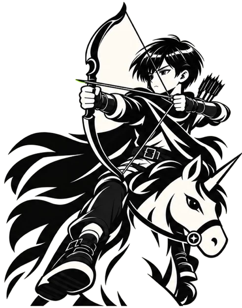

AI NATIVE LEXICON / BRAND 1.0
品牌素材 · 实际尺寸预览
这些素材来自项目品牌原稿。左列为浅色背景，右列为深色背景；图片按标注的 CSS 像素显示。骑射主视觉保留原始像素，491 像素宽的输出支持 245 像素宽的 2× 显示。
标准字标
01-brand-identity.jpg · §03 · 源区域 325 × 62 px
北极星
01-brand-identity.jpg · §07 · 源区域 115 × 146 px
独角兽组合
01-brand-identity.jpg · §04 · 源区域 207 × 263 px

Concept
04-iconography.jpg · §04/01 · 源区域 103 × 98 px
Primitive
04-iconography.jpg · §04/02 · 源区域 96 × 91 px
Speaking Guide
04-iconography.jpg · §04/03 · 源区域 97 × 92 px
Skill Map
04-iconography.jpg · §04/04 · 源区域 100 × 97 px
Map Node
04-iconography.jpg · §04/13 · 源区域 97 × 103 px
Task Journey
04-iconography.jpg · §04/18 · 源区域 100 × 112 px
原稿骑射主视觉
01-brand-identity.jpg · §01 · 源区域 491 × 626 px
